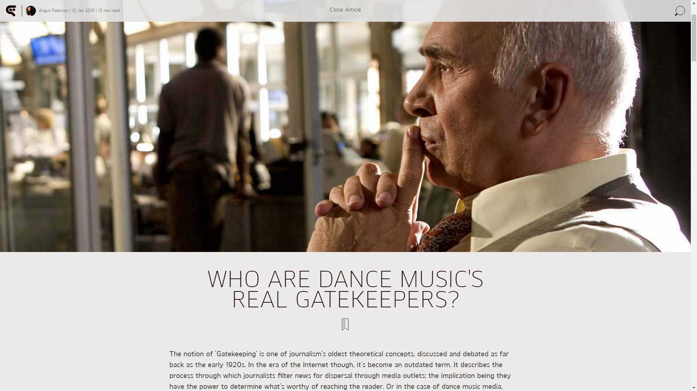

Who Are Dance Music's Real Gatekeepers?
{kind=link}

The notion of ‘Gatekeeping’ is one of journalism’s oldest theoretical concepts, discussed and debated as far back as the early 1920s. In the era of the Internet though, it’s become an outdated term. It describes the process through which journalists filter news for dispersal through media outlets; the implication being they have the power to determine what’s worthy of reaching the reader. Or in the case of dance music media, which artists deserve to be heard.
“I think the whole notion of the gatekeeper is less and less relevant,” says Ben Murphy, editor of DJMag, which once upon a time itself precisely fulfilled the role of The Gatekeeper. During the 90s it was ravenously devoured by clubbing enthusiasts as far away as Australia, as one of their primary sources of information alongside other classic outlets.
However, ‘digital disruption’ has diminished the power of old media’s gatekeepers; and as such, reduced the role of dance media in dictating taste, influencing trends and breaking new artists. This is something Murphy is more than willing to acknowledge.
"...People’s tastes are less dictated to by media outlets..."
“Which outlets would even really want to conform to that role? It carries somewhat of a pejorative tone. The Internet has increasingly democratized things, so people’s tastes are less dictated to by media outlets. People have the means now to decide for themselves what they like.”
However, the role of The Gatekeeper has far from disappeared. Instead, dance media has evolved in a range of interesting ways, spawning a range of new digital forms. Their power has also been dispersed out to a range of new stakeholders, from bloggers and newsfeeds, to digital shopfronts like Beatport, iTunes and Spotify; to other factors exerting influence that are as strangely immaterial (and open to exploitation) as Soundcloud listens and Facebook ‘likes’.
Dance Media’s New Forms
Print has taken the biggest hit in the digital era, with DJMag one of the few prominent magazines still standing. Murphy paints their evolved Gatekeeping role as that of a refined recommender, helping guide music enthusiasts through the digital glut of available music.
“I won’t mix my words here, print is definitely bottoming out, and as a medium it’s certainly heading that way. Online though, music writing tends by its very nature to be more bite sized, lending itself naturally to formats like Q&As and lists. It’s a lot more direct, reactive and immediate. However, you assume by this point that if someone goes to go to the trouble of picking up a magazine, or reading a digital edition of it, they’ll want more detail than a quicker news hit. Neither one is better, they each have their own roles to play.”
Nonetheless, Murphy argues that the influence of dance media remains; though nowadays it manifests in different forms. Firstly, there are artists who deliberately shun the media without compromising success, now having the tools to reach an audience without an intermediary.
“And fair play to them, not everyone wants to cooperate with the media. But at the same time, you can’t get away from the fact that if an artist has substantial coverage, it sorts of goes on their ‘CV’ so to speak. If someone has been on a cover or done an Essential Mix, it really does bolster their reputation. There’s the perception they’re being singled out as a worthwhile artist.”
And then there’s the explosion online of new media, where the role of The Gatekeeper has switched. Many online outlets have embracing the whims of their audience to the point where the power dynamic has been flipped, and the readers are now The Gatekeepers. Google Analytics now allows for all audience activity to be measurable, ensuring the tastemakers are consistently acknowledging their readers.
"...It’s funny how much people feed off negative shit...."
While in the print era, a superstar DJ on the cover might shift a huge amount of magazines, editorial was generally given more freedom in curating the content inside. Online though, editorial knows exactly how many times you did click on that Swedish House Mafia story, and how many times you didn’t click on that über-cool experimental act. It tips the scale towards the big names, and audience preference wins out over editorial tastemaking.
The most extreme manifestation of this is the phenomenon of ‘clickbait’ content, where a controversial DJ soundbyte spreads like wildfire across the different outlets; often nearly identical beyond ‘Chinese whispers’ mutations. Nina Kraviz bit back hard in June when her account of the “proper mass orgasm” of an EDM festival was gleefully taken out of context. And while Seth Troxler has developed a reputation for controversial soundbytes, he’s bemoaned to DJBroadcast on how much the Internet distorts the information being disseminated.
“Sometimes I’ll try to write some really profound things on the Internet, and nobody cares. But you say one bad thing about someone, then for the next several months it’s all like, ‘Twitter-sphere drama!’ It’s funny how much people feed off negative shit. But each to their own.”
On the opposite end of this online hysteria are the likes of Resident Advisor’, XLR8R, Pitchfork and The Quietus; outlets that have cultivated influence among artists, audience and industry alike, arguably by adhering to the classic Gatekeeper notions of curating its content on editorial judgment, rather than being defined by audience preference.
When Gatekeepers Go To War
A range of different next-generation Gatekeepers coalesced to butt heads at this year’s Amsterdam Dance Event (ADE), on a panel titled ‘The Brave New World of (Dance) Music Journalism’. There was the old guard in the form of Nick DeCosemo, editor of Mixmag; the decidedly new guard Zel McCarthy, editor of VICE dance music offshoot THUMP, as well as a defender of Gatekeeping in the form of XLR8R editor Shawn Reynaldo.
“The thing that always happens when the gatekeeper function is removed, [is] it’s not like people go out and discover all this amazing music all of a sudden. I mean, just look at the iTunes Top 10. There’s millions of songs there, but everyone just buys the same fucking 1 percent of music.”
Reynaldo was unafraid to discuss his militant editorial approach, hilariously coming to verbal blows with the flamboyant McCarthy on several occasions, and he strongly argued the case for Gatekeeping curation over audience preference.
“I certainly pay attention to the audience, like everyone else; but at the same time, I don’t really care too much about what the audience is saying. I was hired because my bosses trust my taste, and a certain editorial perspective. I also hired staff that I feel fit into that. Some things you can cover if you want to be more popular; but I’m just not interested in doing that.”
Meanwhile, DeCosemo from Mixmag emphasised the role of the publication as a curator that leads its readers towards the quality content.
“If you’re genuinely into dance music, you got into it for a reason and you’re probably very passionate about the culture. You’re not a passive consumer of it. So you wanna be guided to the good stuff. I’d point to our SoundCloud account, where we debut releases regularly and have over a million followers, we’ve got that kind of following because we offer a curation service. We put stuff in there that we think is good and that people will connect with.”
McCarthy on the other hand was the only panelist brave enough to come out in support of clickbait content; positioning it as a strategy to draw audience attention to cooler content.
“You can appeal to someone’s intellectual sensibilities, but the reality of the digital landscape is that they’re being bombarded with so much information, if you can’t grab their attention in that split second when they read your headline, you’re going to miss them. And it’s not to your advantage that they miss out, and it’s not to the advantage of the artist either, because they’re missing an opportunity to connect with a fan. But admittedly, it is a huge shift for media outlets, especially if you’re moving from the pace of a print magazine to daily blogging.”
The Hidden Stakeholders
Another tangible stakeholder that has a huge influence on the electronic music that manages to cut through the noise are one of the big unsung Gatekeepers of the industry; the publicists and PR professionals who are entrusted with the responsibility of helping cultivate a narrative for an artist, and bring them into our collective attention. Day in and day out, attempting to persuade media outlets their artists are worthy of attention.
One of the most prominent PR agencies working in house and techno is Neighbourhood PR, who boast a cast of high-profile DJ/producers like Scuba, Maya Jane Coles, Hot Since 82, Pan-Pot, Agoria and more on their books. One of their particularly successful narratives for the latter part of 2014 was Dutch veteran Joris Voorn, who’s enjoyed a wave of critical acclaim and coverage following the release of his new artist album Nobody Knows.
“...There is still a huge level of value when a particular media outlet embraces an artist..."
Neil Bainbridge (pictured) established Neighbourhood PR last year after a near 15-year history of being involved in dance music; and he says the key to securing coverage for his artist clients stems from the strength of the media relationships that he is able to cultivate.
“It’s the level of trust that we’re able to build,” Bainbridge told DJBroadcast. “The fact that I can email an editorial contact at a magazine and encourage them to check out an artist, and they’ll actually take the time to listen. It’s not necessarily about the volume of contacts, or aggressive attempts to make a success of an artist. It’s about understanding the marketplace, and where those pockets of support might come from, ahead of presenting any new material.”
“It’s also an organic thing. I’d much rather work with an artist over 15 years, than over a single month for the sake of a publicity binge. The most successful artists embraced the long game.”
In terms of how the listening behavior of dance enthusiasts is being influenced in 2014, Bainbridge argues that media coverage still has huge significance; although the fashion in which that power manifests has changed to the point of being unrecognizable.
“There is still a huge level of value when a particular media outlet embraces an artist, and essentially stamps their approval on them. Possibly even more so than prior to the Internet. And that’s because the way that information is disseminated to people now, it’s basically underneath their nose whether they like it or not. Before Facebook and social media, you would have to engage with the magazine and actually buy it. You’d have a vested interest in what it had to say that month, there was a higher level of engagement from the audience. Nowadays, a Rolling Stone article could appear on your newsfeed, whether you’re a Rolling Stone reader or not.”
The Power of the Retailers
Bainbridge claims that media coverage might be critical for shaping the identity of an artist, but it can no longer be counted on to translate directly into sales. This Bainbridge points to the other major Gatekeeper; retail outlets. DJBroadcast spoke to Ralf Kollmann, managing director of Mobilee Records, who maintains digital storefronts themselves are the sole driving force for sales in 2014.
“In the ten years I’ve been working with the label, I’ve closely watched the impact of both print and online media. And I’d say that in recent years, we’ve been happy to avoid any kind of media coverage around label releases. I don’t think this kind of promotion has any significant impact on music sales anymore.”
When it comes to cultivating the identity of both an artist and record label itself, it’s a different story altogether according to Kollmann, but in order to promote new releases, it’s the promotional banners on Beatport that are critical for influencing consumer behaviour.
“This is the most important tool that retailers have. There are thousands of labels competing for a promotional feature; front-page banners, a ‘New Release’ icon, or space in the genre pages. In fact, if I could secure a prominent promotional spot on Beatport in exchange for skipping all other promotional activities, we’d barely even see any difference. Social networking, press coverage, none of it translates into sales in a significant way. It’s not something Beatport really likes to talk about it public, though they do use it a bargaining chip with labels.”
With that said, Kollmann also maintains that digital sales are rapidly in decline. Kollmann says he’s been convinced to reverse his opposition to streaming services like Spotify as he’s watched it transform into a significant revenue stream; a development he says is playing out similarly across other independent dance labels. This week’s news that Beatport will be moving towards a streaming platform in 2015 suggests that in terms of who wields the power over influencing consumer behavior, nothing really stands still for very long in the digital era.
"...It's faintly depressing to hear bands referred to as ‘brands'..."
Gatekeepers Transformed
To a degree, it’s quaint to be talking about notions of a Gatekeeper in the digital era, when the way in which we consume information has so been irrevocably transformed. The digital disruption has seen the bottom fall out from under the media industry, just as much as it has in the music industry. Put these two things together, and it’s an ongoing struggle to once again find a way to monetize something that consumers no longer want to pay for.
It seems naïve to criticize dance press for chasing the easy audience wins, and writing clickbait content. While the likes of Resident Advisor and XLR8R have negotiated a business model where editorial has been gifted the luxury of choosing judgment over the base instincts of its audience, publishers at large are still trying to figure out a way to make online outlets sustainable. Indulge your audience too much and they’ll push back in response to the squandered credibility.
Above and beyond the traditional Gatekeepers though, our listening preferences are being influenced in ways that we often aren’t even aware of. Some of the new stakeholders wielding in the digital era aren’t even living and breathing. One of this year’s oddities came when The Guardian was granted a pass to sit in on the playlist committee meeting of BBC Radio 1 in London; where “the future of British music” was being decided. What they discovered was that programming choices are as heavily influenced by an artist's YouTube views, Soundcloud hits, Shazam ratings, Twitter followers and Facebook likes.
“It's faintly depressing to hear bands referred to as ‘brands’ with their worth determined by online data. Stats is business talk. It isn't creative, it isn't art, it's box-ticking. It's playing people the kind of music that they're already listening to,” Nadia Khomami wrote in The Guardian.